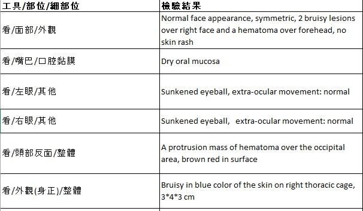
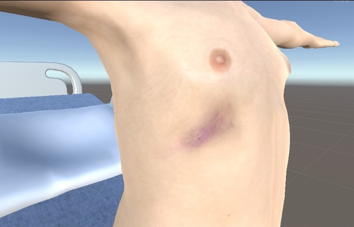
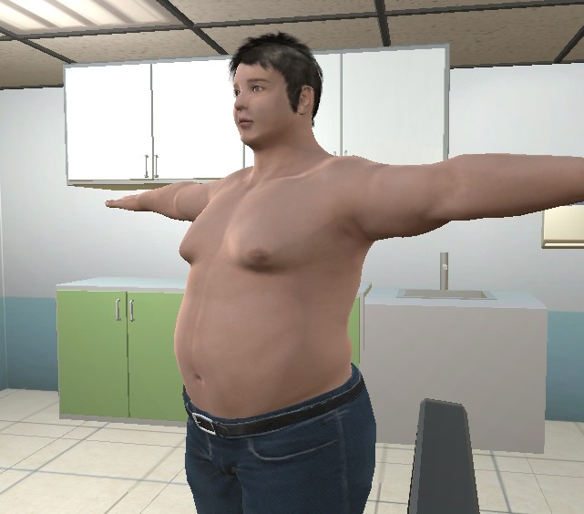
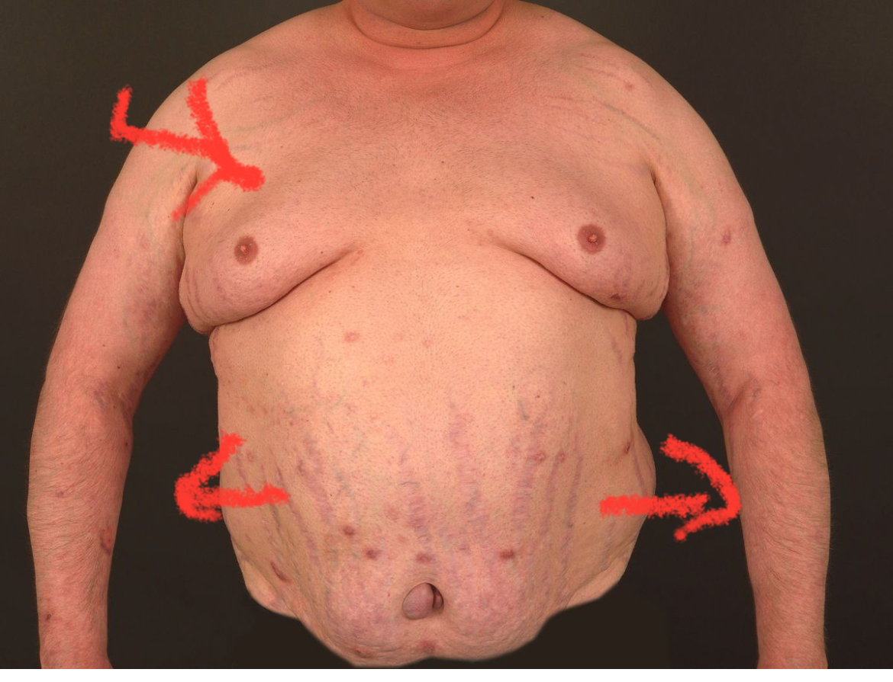
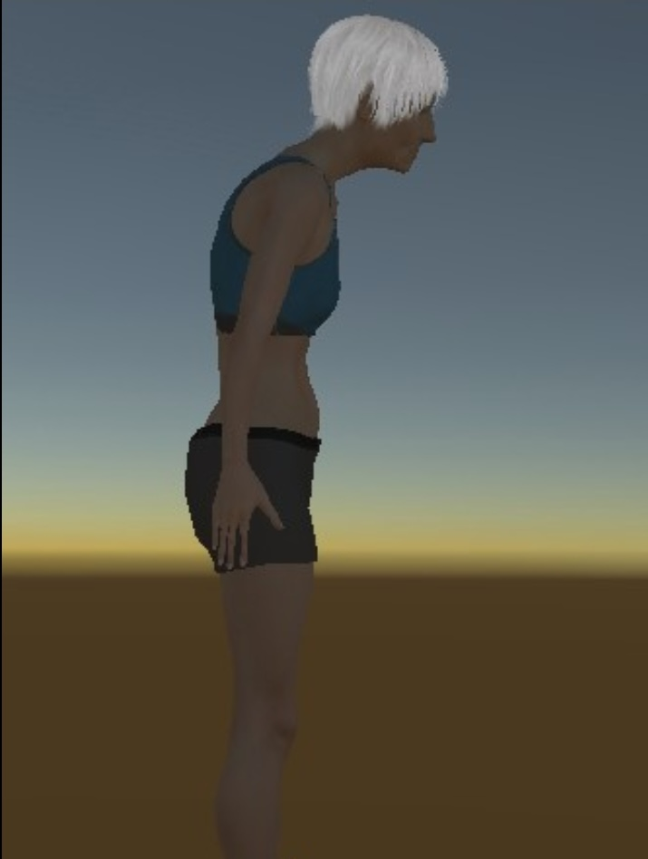
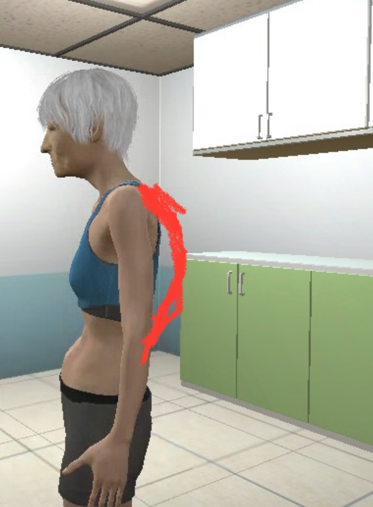

Audited 50 virtual patient simulations for an EdTech medical platform, aligning 3D avatar visual symptoms with clinical database truth on legacy university hardware.
Problem Discovery: Why Medical Students Misdiagnosed Simulated Patients
Innova Medical built a serious-game clinical simulation platform across 50 patient cases, turning consultations, physical examinations, and differential diagnosis into task-based interactive missions with real-time scoring for medical universities.
During university trials, students repeatedly failed physical examinations, reporting severe diagnostic confusion. Engineering assumed the 3D graphics lacked visual realism and planned an extensive 6 to 8 week cosmetic overhaul. However, firsthand audits revealed that student misdiagnoses were driven by data discrepancies rather than polygon counts. Avatars displayed default unblemished skins, generic clothing, and flat spines that contradicted clinical database records. Students who followed proper clinical diagnostic methods were misled by missing visual affordances, failing their missions despite correct medical reasoning.
Interaction Design: Where the Clinical Reasoning Flow Collapsed
Each simulation operates as a structured diagnostic mission. I mapped the five-step clinical reasoning loop to pinpoint exactly where student interactions broke down:
When visual symptoms failed to render, steps 2 and 3 yielded zero visual evidence. This forced students to rely entirely on misleading verbal stories, directly penalizing those who attempted proper physical examination.
Product Strategy: Why a 6 to 8 Week Cosmetic Overhaul Was Averted
I evaluated each simulation case by shadowing student workflows: history taking, verbal dialogue, visual examination, and diagnosis. To align engineering priorities with clinical reality, I organized scope across a 2D matrix balancing importance against time effort:
- Optimize 3D simulation performance
- Correct animations that will affect consultations
- Correct visual features that match the disease symptom
- High fidelity lighting
- Design better animation
- Upgrade models aesthetic (6 to 8 week cosmetic overhaul canceled)
Demonstrating that student misdiagnoses stemmed from data discrepancies rather than polygon counts averted a 6 to 8 week cosmetic remodel, refocusing sprints on clinical ground truth and dialogue synchronization.
Diagnostic Audit: How a 6-Step Whiteboard Workflow Traced 50 Cases
To bridge clinical medicine and software engineering across all 50 cases, I led a hands-on diagnostic audit on the studio whiteboard:
User Research
Interviewed students and professors to catalog exam confusion.
Case Playthroughs
Completed every simulation firsthand to map friction points.
Storyboarding
Mapped required visual signs on whiteboard consultation storyboards.
Gap Analysis
Contrasted current visual flaws against clinical criteria.
Targeted 3D Fixes
Remediated textures, facial blendshapes, and rigs in Blender and Unity.
Collaborative Reviews
Refined assets through weekly cycles with the doctor and engineer.
Spatial Affordance Design: Restoring Diagnostic Cues Across 3 Clinical Departments
Walking through all 50 cases proved that simulation defects clustered across three distinct technical layers, each aligning with a specific medical discipline:
Pediatric Trauma: Surface Albedo
Diagnosing non-accidental trauma relies on recognizing multi-stage bruise healing, where fresh purple contusions appear alongside resolving green-yellow marks. The avatar rendered a clean skin shader, leading students to misdiagnose injuries as minor accidental falls.
Database truth: Two facial contusions, 3x4x3 cm thoracic cage contusion, occipital hematoma, and multi-stage bruise healing chronology.
Simulation remediation: Textured multi-stage bruise albedo maps directly onto cheek soft tissue and lateral ribs, synchronized with virtual penlight inspection.


Cushing's Disease: Mesh Morphology
The avatar loaded as a generic stocky male in street jeans. Students repeatedly misidentified the condition as simple obesity because the 3D model lacked rounded moon face fullness and abdominal purple striae.
Database truth: Hypercortisolemia profile requiring rounded moon face with plethora, central truncal adiposity, and wide violaceous abdominal striae.
Simulation remediation: Reshaped facial blendshapes for moon face fullness, adjusted limb-to-torso proportions, and textured wide purple striae visible in examination shorts.


Severe Osteoporosis: Skeletal Armature
The avatar featured an anatomically straight thoracic spine with simple neck slouch. Camera orbit showed zero signs of collapsed vertebrae, causing students to misdiagnose chronic pain as cervical muscle strain.
Database truth: Severe bone mineral loss with multiple anterior wedge compression fractures producing pronounced thoracic kyphosis and height loss.
Simulation remediation: Cross-referenced spinal lateral X-rays to re-rig the spine armature, introducing an authentic convex Dowager's hump along upper thoracic vertebrae.


Cross-Functional Alignment: Connecting Doctor Schemas, LLM Dialogue, and 3D Assets
To create a shared language between medical doctors evaluating diagnostic criteria and software engineers managing shaders, I structured a unified Cross-Validation Defect Matrix across all 50 cases:
| Case ID and Department | Database Schema Truth | LLM Dialogue Output | Rendered 3D Visual | Simulation Defect Layer | Student Clinical Impact |
|---|---|---|---|---|---|
| Case 012Child Medicine | Battered Child Syndrome: 2 facial bruises, 3x4x3 cm thoracic contusion, occipital hematoma | Parent narrative attributes visible injuries to single minor household fall | Default uniform skin shader with zero contusions or color staging | Surface Texture and Albedo | Students failed to suspect non-accidental trauma, misdiagnosing as minor accidental fall |
| Case 027General Medicine | Cushing's Disease: Moon face with facial plethora, central adiposity, wide purple abdominal striae | Patient reports progressive weight gain and easy bruising despite normal diet | Generic stocky male avatar wearing jeans with flat facial contours | Mesh Morphology and Blendshapes | Students misdiagnosed as simple exogenous obesity, omitting endocrine workup |
| Case 038Elder Care | Severe Osteoporosis: Thoracic kyphosis and Dowager's hump from vertebral compression fractures | Patient describes chronic upper back dull ache and gradual loss of standing height | Flat thoracic spine with isolated forward neck flexion | Skeletal Armature and Rigging | Students misdiagnosed as cervical muscle strain, omitting DEXA scan and spine imaging |
This matrix gave both partners unambiguous common ground: doctors verified diagnostic criteria, while engineers received explicit asset IDs and sync offsets to remediate in code.
Performance Engineering: Preserving 60 FPS on Legacy University Hardware
University computer labs operated on legacy workstations equipped with NVIDIA GTX 1060 GPUs and required WebGL browser deployment. Rather than adding compute-heavy shaders, I implemented a disciplined technical art pipeline:
Measurable Impact: What Changed Across 50 Virtual Patient Simulations
Roadmap priorities shifted decisively away from cosmetic 3D redesigns toward foundational audiovisual synchronization and symptom schema alignment. Diagnostic confusion was resolved at the root data layer.
By proving through structured walkthroughs that student diagnostic errors were driven by data discrepancies rather than graphics, the team canceled the planned 6 to 8 week cosmetic art overhaul. I partnered with the engineer and medical domain expert to reprioritize engineering sprints toward direct database-to-visual linking and dialogue packet synchronization.
All 50 clinical simulation cases were mapped and reconciled. Medical student diagnostic accuracy improved because verbal testimony and visual clinical signs finally aligned, establishing a credible, clinically validated training simulation.
Surface visual complaints often mask deeper system data disconnects. The team was ready to spend weeks re-sculpting 3D meshes, but the true root cause was broken schema synchronization across verbal and visual modalities. Product design must begin by interrogating the truth of the system data before reworking the visual surface.